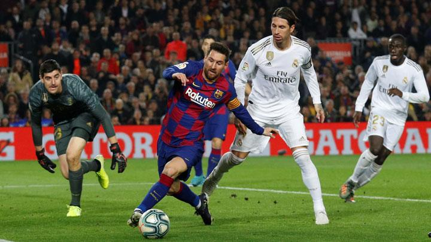
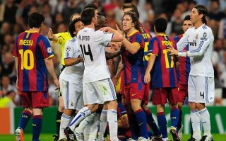

EL Clasico
There is often a fierce rivalry between the two strongest teams in a national league, and this is particularly the case in La Liga, where the game between Barcelona and Real Madrid is known as "The Classic" (El Clásico). From the start of national competitions the clubs were seen as representatives of two rival regions in Spain: Catalonia and Castile, as well as of the two cities. The rivalry reflects what many regard as the political and cultural tensions felt between Catalans and the Castilians, seen by one author as a re-enactment of the Spanish Civil War. Over the years, the head-to-head record between the two clubs is 100 victories for Madrid, 97 victories for Barcelona, and 52 draws.
As early as the 1930s, Barcelona "had developed a reputation as a symbol of Catalan identity, opposed to the centralising tendencies of Madrid". In 1936, when Francisco Franco started the Coup d'état against the democratic Second Spanish Republic, the president of Barcelona, Josep Sunyol, member of the Republican Left of Catalonia and Deputy to The Cortes, was arrested and executed without trial by Franco's troops (Sunyol was exercising his political activities, visiting Republican troops north of Madrid). During the dictatorships of Miguel Primo de Rivera and especially Francisco Franco, all regional languages and identities in Spain were frowned upon and restrained. As such, most citizens of Barcelona were in strong opposition to the fascist-like regime. In this period, Barcelona gained their motto Més que un club (English: More than a club) because of its alleged connection to Catalan nationalist as well as to progressive beliefs.
There's an ongoing controversy as to what extent Franco's rule (1939–75) influenced the activities and on-pitch results of both Barcelona and Real Madrid. Fans of both clubs tend to exaggerate the myths favouring their narratives. Most historians agree than Franco did not have a preferred football team, but his Spanish nationalist beliefs led him to associate himself with the establishment teams, such as Atlético Aviación and Madrid FC (that recovered its royal name after the fall of the Republic). On the other hand, he also wanted the renamed CF Barcelona succeed as "Spanish team" rather than a Catalan one. During the early years of Franco's rule, Real Madrid weren't particularly successful, winning two Copa del Generalísimo titles and a Copa Eva Duarte; Barcelona claimed three league titles, one Copa del Generalísimo and one Copa Eva Duarte. During that period, Atlético Aviación were believed to be the preferred team over Real Madrid. The most contested stories of the period include Real Madrid's 11–1 home win against Barcelona in the Copa del Generalísimo, where the Catalan team alleged intimidation, and the controversial transfer of Alfredo Di Stéfano to Real Madrid despite his agreement with Barcelona. The latter transfer was part of Real Madrid chairman Santiago Bernabéu's "revolution" that ushered in the era of unprecedented dominance. Bernabéu, himself a veteran of the Civil War who fought for Franco's forces, saw Real Madrid on top not only of Spanish but also European football, helping create the European Cup, the first true competition for Europe's best club sides. His vision was fulfilled when Real Madrid not only started winning consecutive league titles but also swept the first five editions of the European Cup in the 1950s. These events had a profound impact on Spanish football and influenced Franco's attitude. According to historians, during this time he realized the importance of Real Madrid for his regime's international image, and the club became his preferred team until his death. Fernando Maria Castiella, who served as Minister of Foreign Affairs under Franco from 1957 until 1969, noted that "[Real Madrid] is the best embassy we have ever had." Franco died in 1975, and the Spanish transition to democracy soon followed. Under his rule, Real Madrid had won 14 league titles, 6 Copa del Generalísimo titles, 1 Copa Eva Duarte, 6 European Cups, 2 Latin Cups and 1 Intercontinental Cup. In the same period, Barcelona had won 8 league titles, 9 Copa del Generalísimo titles, 3 Copa Eva Duarte titles, 3 Inter-Cities Fairs Cups and 2 Latin Cups.
The rivalry was intensified during the 1950s when the clubs disputed the signing of Alfredo Di Stéfano. Di Stéfano had impressed both Barcelona and Real Madrid while playing for Los Millionarios in Bogotá, Colombia, during a players' strike in his native Argentina. Soon after Millonarios' return to Colombia, Barcelona directors visited Buenos Aires and agreed with River Plate, the last FIFA-affiliated team to have held Di Stéfano's rights, for his transfer in 1954 for the equivalent of 150 million Italian lira (according to other sources 200,000 dollars). This started a battle between the two Spanish rivals for his rights. FIFA appointed Armando Muñoz Calero, former president of the Spanish Football Federation as mediator. Calero decided to let Di Stéfano play the 1953–54 and 1955–56 seasons in Madrid, and the 1954–55 and 1956–57 seasons in Barcelona. The agreement was approved by the Football Association and their respective clubs. Although the Catalans agreed, the decision created various discontent among the Blaugrana members and the president was forced to resign in September 1953. Barcelona sold Madrid their half-share, and Di Stéfano moved to Los Blancos, signing a four-year contract. Real paid 5.5 million Spanish pesetas for the transfer, plus a 1.3 million bonus for the purchase, an annual fee to be paid to the Millonarios, and a 16,000 salary for Di Stéfano with a bonus double that of his teammates, for a total of 40% of the annual revenue of the Madrid club.
Di Stéfano became integral in the subsequent success achieved by Real Madrid, scoring twice in his first game against Barcelona. With him, Madrid won the first five editions of the European Cup. The 1960s saw the rivalry reach the European stage when Real Madrid and Barcelona met twice in the European Cup, with Madrid triumphing en route to their fifth consecutive title in 1959–60 and Barcelona prevailing en route to losing the final in 1960–61. In 2002, the European encounter between the clubs was dubbed the "Match of The Century" by Spanish media, and Madrid's win was watched by more than 500 million people An intense fixture which is marked by its indiscipline in addition to memorable goal celebrations from both teams often involving mocking the opposition such notable celebrations occurred in 2009 when Barcelona captain Carles Puyol kissed his Catalan armband in front of incensed Madrid fans at the Santiago Bernabéu Stadium and in 2017 when Lionel Messi celebrated his 93rd-minute winner for Barcelona against Real Madrid at the Bernabéu by taking off his Barcelona shirt and holding it up to incensed Real Madrid fans – with his name and number facing them.